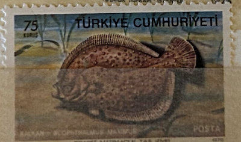
| SOURCE | TITLE| IMAGE MATCH | click to source page |
| WoRMS - World Register of Marine Species | WoRMS - World Register of Marine Species - Scophthalmus maximus (Linnaeus, 1758) | 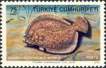 |
| eBay | TURBOT - 40 + year old English Tobacco Card # 25 | eBay |  |
| Animalia - Online Animals Encyclopedia | Plate fish - Facts, Diet, Habitat & Pictures on Animalia.bio | 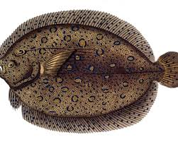 |
| Amazon.com | Amazon.com : Betsy Drake DM014 Door Mat, 18 inches x 26 inches, Multi : Patio, Lawn & Garden | 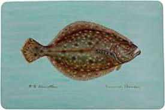 |
| Etsy | Antique Fish Print WHIFF FLOUNDER Original Donovan Vintage Engraving 1803 - Etsy | 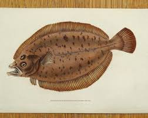 |
| Etsy | Fish Art Prints Flounder - Etsy |  |
| Yakobi Fisheries | Wild Alaska Halibut Pre-order — Yakobi Fisheries | 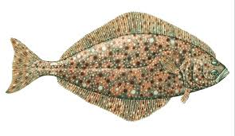 |
| Quizlet | Fish ID (CIA) Flashcards | Quizlet | 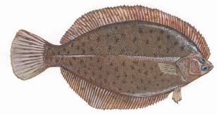 |
| Charting Nature | Fish Print: Yellowtail Flounder Limanda ferrunginea – Charting Nature | 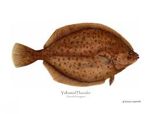 |
| Fine Art America | Vintage Fish Illustration - Peacock Flounder Round Beach Towel by Studio Grafiikka - Fine Art America | 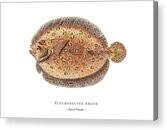 |
| Album Online | Brill or kite fish, Scophthalmus rhombus (Pleuronectes rhombus). Handcoloured copperplate engraving by James Sowerby from The British Miscellany, or Coloured figures of ne - Album alb3402877 | 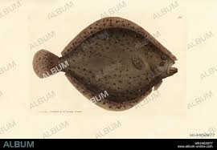 |
| Etsy | Turbot Fish Print. Hand Coloured 1788 Antique French Engraving by Bonnaterre. Decorative Antique Coastal Home Decor. - Etsy | 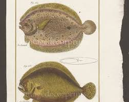 |
| John Furches | Flounder – The John Furches Gallery | 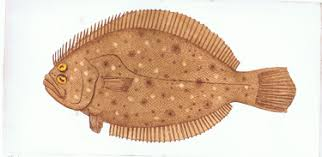 |
| NJ.gov | Striped Bass Facts | 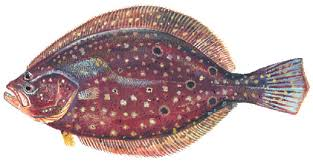 |
| Nick Mayer Art | California Halibut Print - Unique West Coast Gamefish | 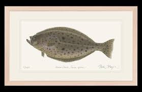 |
| Amazon Web Services | Name Date ______ Period 1 2 3 4 5 6 Classifying Marine Fishes Just for the halibut Part I | 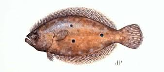 |
| Wikipedia | Olive flounder - Wikipedia | 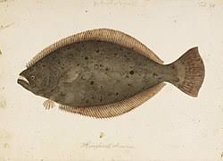 |
| YouTube | How To Catch Big Winter Dab - UK And Europe - Beginners And Improvers - Sea Fishing Tutorial - YouTube | 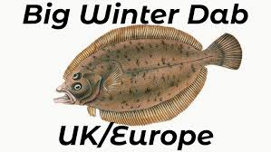 |
| Etsy | 1907 PLAICE FISH Print - Original Antique Marine Print - Fish Wall Art - Sea Life Print - 116 Years Old - 6.15 X 4.25 Inches - Etsy | 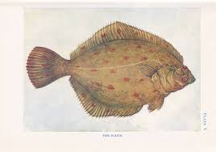 |
| Wikipedia | Black flounder - Wikipedia |  |
| Virginia.gov | Virginia's Recreational Fishing Game | 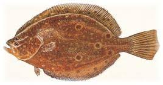 |
| Catanese Classic Seafood | Catanese Classic Seafood TURBOT | 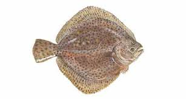 |
| Platophrys (Platophrys) pavo blkr [= Rhombus pavo Bleeker, 1855] | 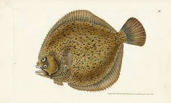 | |
| Delaware.gov | Yellowtail Flounder - Delaware Fish Facts | 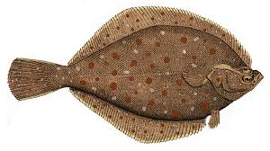 |
| RAMSEY PAINTS | SOUTHERN FLOUNDER 11X14 classic — RAMSEY PAINTS | 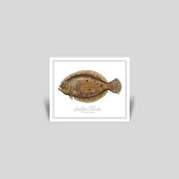 |
| eBay | Marcus Bloch 1785 - Plate 048 Pleuronectes Argus, Flounder - 13x19 Reproduction | eBay | 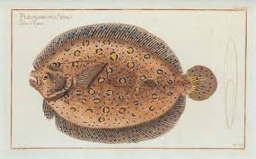 |
| Mokie Burns | Mokie Burns - Fishing Pyrography Art, Apparel, Accessories and Decor – Mokie Burns® | 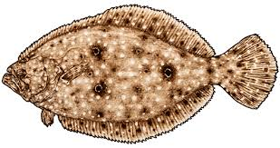 |
| Etsy | Original Gyotaku Fish Print, Flounder #2, Mounted on Canvas Board - Etsy | 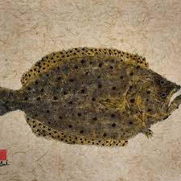 |
| Etsy | Chætodon, Turbot, and Sole Fish Print. Hand Coloured 1788 Antique French Engraving by Bonnaterre. Antique Coastal Home Decor. - Etsy | 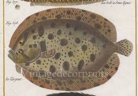 |
| Etsy | Vintage School Chart | Seawater Fish 0024 (turbot, Sole, Flounder, Plaice), Berlin, Vintage, Poster , Original Wall Hanging Chart - Etsy | 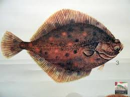 |
| Society6 | Vintage Illustration of a Flounder Fish (1785) Coffee Table by BravuraMedia | Society6 | 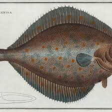 |
| University of Michigan | FATE Proposal | CIGLR | 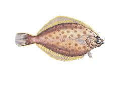 |
| YouTube | Know Your Flatfish Species with this Identification Guide - YouTube | 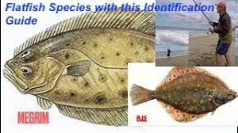 |
| NJ.gov | Optimization of Hook Size in the N.J. Summer Flounder Hook and Line Fishery | 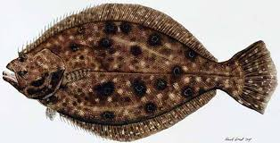 |
| Etsy | Fluke Open Edition Print by Flick Ford, Saltwater Food Fish, Natural History Art, Summer Flounder, Atlantic Fish Art, East Coast Fish Art - Etsy |  |
| Alamy | Turbot fish (Scophthalmus maximus species of flatfish ) lying the ground with the same color of the seabed Stock Photo - Alamy | 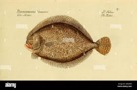 |
| Freeport Texas Report | 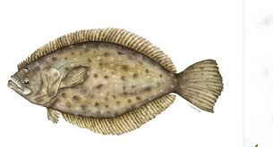 | |
| revistazejel.com | Boat Decals Custom Fishing Rod Decals - Choose Your Fish Species Sticker For Rod Building Boat Decals Graphics | 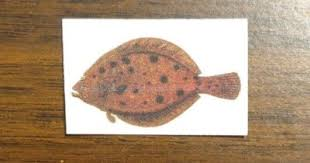 |
| COMC.com | 1954 The White Fish Authority The Fish We Eat Non-Sports Cards | 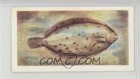 |
| Animalia - Online Animals Encyclopedia | Winter flounder - Facts, Diet, Habitat & Pictures on Animalia.bio | 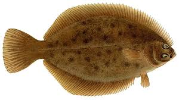 |
| tamaraclark.com | Dover Sole Antique Framed Print – Tamara L Clark | 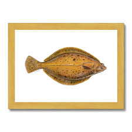 |
| 🤯If this glitch is true, then I'm surely about to try this... : r/NoMansSkyTheGame | 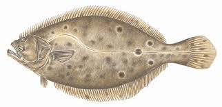 | |
| Etsy | Ancient Print, Fish 1863-1879 Raimondo Petraroja - Etsy | 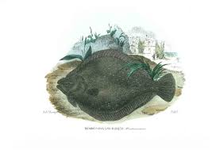 |
| Media Storehouse | Mackerel Print from 18th Century Ichthyologie Engraving. Art Prints, Posters & Puzzles from Fine Art Finder | 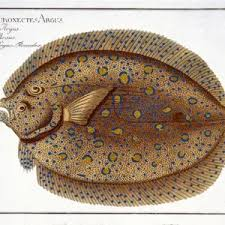 |
| NOAA (.gov) | Pacific Halibut | NOAA Fisheries | 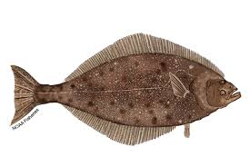 |
| Norrik | Winter Flounder Fishing Guide | How to Catch a Winter Flounder | 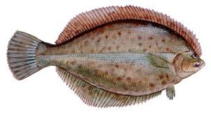 |
| Pictorem | pleuronectes Art Collection | 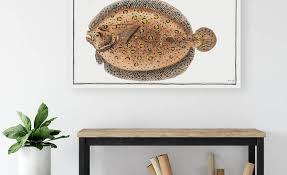 |
| Fine Art America | Dabs Drawings for Sale - Fine Art America | 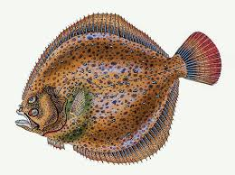 |
| Etsy | Flounder Fish Watercolor Original Painting Print by Brenton Sadreameli 19" X 12" - Etsy | 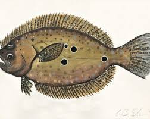 |
| eBay | 1904-1906 RARE Antique DENTON FISH Print HALIBUT Hippoglossus EXCELLENT L@@K! | eBay | 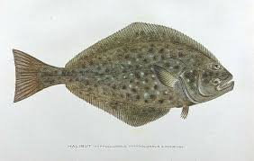 |
| Caden Hollingsworth (cadenhollingsworth) - Profile | Pinterest | 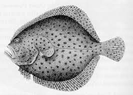 | |
| Wikipedia | Summer flounder - Wikipedia | 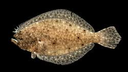 |
| Etsy | Antique Fish Turbot Eel Print Original 1849 Print French D'histoire Naturelle Hand Coloured Engraving Exotic Fishing Art Ichthyology ORB2 - Etsy | 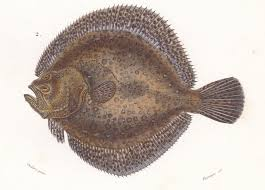 |
| Media Storehouse | Rhombus Art Prints, Posters & Puzzles | |
| famouspaintings.com | The Sole Acrylic Print by Mark Catesby - Famous Paintings | |
| Garden & Gun | Works by John Alexander – Garden & Gun | |
| eBay | 1983 STARRY FLOUNDER FISH RUSSIA FIRST DAY OF ISSUE MAXIMUM CARD GOOD TO FRAME | eBay | |
| Fine Art America | Flounder Acrylic Print by Carey Chen - Fine Art America | |
| 1stDibs | Flounder and Plaice - Vibrant Scandinavian Flatfish Lithograph, 1895 For Sale at 1stDibs |